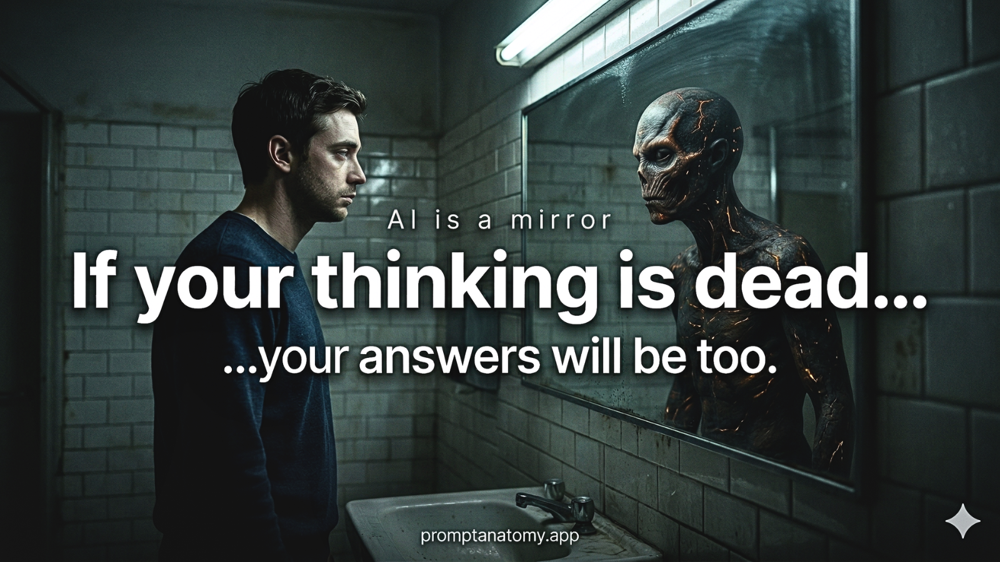
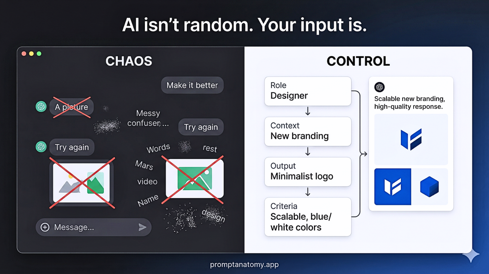
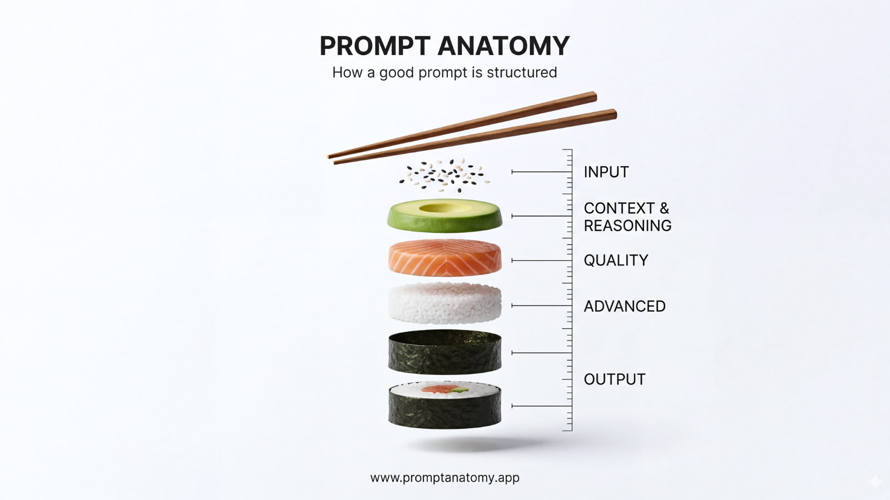

Prieš (per miglu)
Pavyzdys, kai DI prigalvoja detalių, nes trūksta rėmo.
Promptas
„Paruošk ataskaitą apie mūsų Q3 iniciatyvą.“
Rizika
DI spėlioja: auditorija, formatas, skaičiai, ką jau žinai.
Nuo DI „spėliojimo“ iki aiškios darbo sistemos: mažiau taisymo, daugiau kontrolės.
5 žingsniai, kad DI nespėliotų, o dirbtų pagal jūsų užduoties logiką. Jei atsakymas „plaukia“ — dažniausiai trūksta 1–2 žingsnių.



Geresni atsakymai ateina ne iš technologijos, o iš gebėjimo ją įdiegti kaip procesą: šablonas → patikra → kartojimas komandoje.
Jei nori ne „vieno gero prompto“, o komandinio rezultato — pereik į mokamą programą.
Papildomai
Atsisiųsti santrauką (PDF)Telegram (palaikymas ir naujienos)